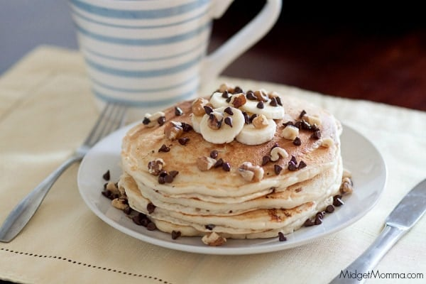

Home
Pancakes

Description
Fluffy pancakes made with simple ingredients. Great for a quick breakfast or weekend brunch.
Ingredients
- 1 cup all-purpose flour
- 2 tablespoons sugar
- 1 teaspoon baking powder
- 1/2 teaspoon baking soda
- Pinch of salt
- 3/4 cup milk
- 1 egg
- 2 tablespoons melted butter or oil
Steps
- Mix dry ingredients: In a bowl, whisk flour, sugar, baking powder, baking soda, and salt.
- Mix wet ingredients: In another bowl, whisk milk, egg, and melted butter together.
- Combine: Pour wet ingredients into dry and mix gently until just combined (do not overmix).
- Cook: Heat a non-stick pan over medium heat. Pour 1/4 cup batter for each pancake. Cook until bubbles appear on top, then flip and cook until golden brown.
- Serve: Stack and serve warm with syrup, butter, or fruit.